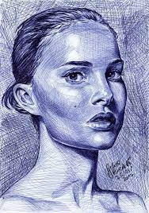

Mtaa Art Gallery


These arts were drawn by Kevin Juma. A 29 year old male, who is personate about art. He has been drawing since he left high school. He wishes to start his own art gallery studio to encourage young youths, who are love art not to give up on their talents. In his studio, He has managed to recruit a few students.